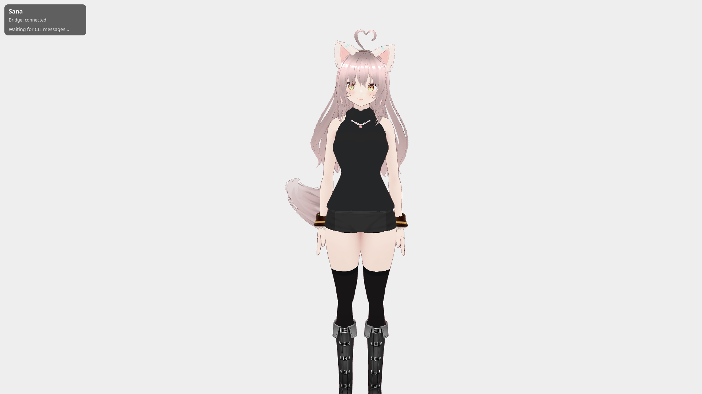

01
AI Companion · Voice Synthesis · FastMCP Systems
2024—Present
Sana AI
Most conversational assistants remain trapped inside passive, transactional web chat boxes. Sana was engineered to explore an active personal companion that unifies real-time voice conversation, 3D spatial presence, and autonomous tool execution via Model Context Protocol (MCP).
Powered by a Python/FastAPI backend with Groq-accelerated LLM inference, Sana evaluates user requests, preserves context across multi-turn dialogues, and executes local system tasks — such as file inspection, shell queries, and live device telemetry — through standardized, sandboxed tool definitions.
System Architecture: Sub-second speech-to-text pipeline using
faster-whisper with Voice Activity Detection (VAD) coupled with streaming ElevenLabs audio synthesis and a WebGL 3D character avatar rendered via Three.js.
- Sub-second conversational latency orchestrated through Groq Llama inference
- Extensible tool dispatch protocol inspired by Model Context Protocol (FastMCP)
- Integrated voice pipeline with local Whisper speech recognition and streaming TTS
- Autonomous system execution: local file reading, command delegation, and status queries
Python
FastAPI
Groq
FastMCP
Whisper
Three.js
WebGL
